Operating Systems
Table of Contents
1 Represeting Infomation
1.1 Integer
1.1.1 Integer Limits
\[TMax_w = 2^{w-1}-1\quad TMin_w = - 2^{w-1}\quad UMax_w = 2^w-1\quad UMin_w = 0\]
1.1.2 B2U
\[B2U_w(\overrightarrow{x})\doteq\sum_{i=0}^{w-1}x_i2^i\]
1.1.3 B2T
\[B2T_w(\overrightarrow{x})\doteq-x_{w-1}2^{w-1}+\sum_{i=0}^{w-2}x_i2^i\]
1.1.4 T2U
\[T2U_w(x)\doteqB2U_w(T2B_w(x))\]
- input: \(TMin_w\sim TMax_w\)
- output: \(0\sim UMax_w\)
\[T2U_w(x) = \begin{cases} x+2^w, & x < 0 \\ x, & x \ge 0 \\ \end{cases}\] \[T2U_w(x) = x_{w-1}2^w + x\]
1.1.4.1 Verification
\[B2U_w(\overrightarrow{x})-B2T_w(\overrightarrow{x})=x_{w-1}(2^{w-1}+2^{w-1})=x_{w-1}2^w\] \[B2U_w(\overrightarrow{x})=x_{w-1}2^w + B2T_w(\overrightarrow{x})\] Let \(\overrightarrow{x}=T2B_w(x)\) , Then: \[T2U_w(x)=B2U_w(T2B_w(x)) = x_{w-1}2^w + B2T_w(T2B_w(x)) = x_{w-1}2^w + x\]
1.1.5 \(U2T_w(x)\)
\[U2T_w(u) = \begin{cases} u, & u<2^{w-1} \\ u - 2^w, & u\ge2^{w-1} \\ \end{cases}\] \[U2T_w(u)=B2T_w(U2B_w(u))=-u_{w-1}2^w+u\]
1.1.6 Small size to big size
- Change the size(fill 0 or 1 depends on signed/unsigned)
- Convert signed/unsigned
1.1.7 Big size to small size
- Unsigned big2small：\(B2U_k([x_{k-1},x_{k-2},\cdots,x_0])=B2U_w([x_{w-1},x_{w-2},\cdots,x_0])\mod 2^k\)
- Signed big2small：\(B2T_k([x_{k-1}, x_{k-2}, \cdots, x_0])=U2T_k(B2U_k([x_{k-1},x_{k-2},\cdots,x_0])\)
1.2 Floating Point
1.2.1 Fractional Binary Numbers
1.2.1.1 Sign-Magnitude
\[B2S_w(\overrightarrow{x})\doteq(-1)^{x_{w-1}}\cdot(\dots)\]
1.2.1.2 Fractional Decimal
\[d=\sum_{i=-n}^m10^i\times{d_i}\] Consider Fractional decimal \(12.34_{10}\) \[ 1\times{10^1} + 2\times{10^0} + 3\times{10^{-1}} + 4\times{10^{-2}}=12\frac{34}{100}\]
1.2.1.3 Fractional Binary
\[b=\sum_{i=-n}^m2^i\times{b_i}\] eg: \(101.11_2\) \[ 1\times{2^2} + 0\times{2^1} + 1\times{2^0} + 1\times{2^{-1}} + 1\times{2^{-2}} = 5\frac{3}{4}\]
1.2.2 IEEE Floating-Point
\[V=(-1)^{s}\times{M}\times{2^E}\]
- sign s: negative(s=1) positive(s=0), Sign-Magnitude
- significand M: a fractional binary number, n bits
- exponent E: weights the value by a power of 2, k bits
- \(Bias = 2^{k-1} -1\)
1.2.2.1 float(single-precision)
s=1, k=8, n=23 yielding a 32-bit representation, Bias = 127
1.2.2.2 double(double-precision)
s=1, k=11, n=52, yielding a 64-bit representation, Bias = 1023
1.2.2.3 Nomalized Values
Condition: exp is not all zeros(0) & not all ones(255 for single, 2047 for double)
| s | exp neither all 1 nor all 0 | frac |
\(E = e - Bias\), e is the unsigned number, Hance, the range of \(E\) is
- \(-126\leq{E}\leq{+127}\) for single
- \(-1022\leq{E}\leq{+1023}\) for double
\(M=1+f\) where \(0\leq{f}<1\) having binary representation \(0.f_{n-1}...f_1f_0\) so that, M is in the range \(1\leq{M}<2\) This implied leading 1 is a trick for getting an additional bit of precision for free.
1.2.2.4 Denormalized Values
Condition: exp is all zeros
| s | all 0 | frac |
Serve two purposes:
- represent 0 (all bits are zero)
- represent numbers that are very close to 0.0
1.2.2.5 Spacial Values
Condition: exp is all ones
infinity
s all 1 0 NaN
s all 1 \(\ne 0\)
1.2.2.6 Examples
8-bit floating-point format
| Description | bits | e | E | \(2^E\) | f | M | \(2^E\times{M}\) | V | Decimal |
|---|---|---|---|---|---|---|---|---|---|
| Zero | 0 0000 000 | 0 | -6 | \(\frac{1}{64}\) | \(\frac{0}{8}\) | \(\frac{0}{8}\) | \(\frac{0}{512}\) | 0 | 0.0 |
| Smallest pos. | 0 0000 001 | 0 | -6 | \(\frac{1}{64}\) | \(\frac{1}{8}\) | \(\frac{1}{8}\) | \(\frac{1}{512}\) | \(\frac{1}{512}\) | 0.001953 |
| Largest denorm. | 0 0000 111 | 0 | -6 | \(\frac{1}{64}\) | \(\frac{7}{8}\) | \(\frac{7}{8}\) | \(\frac{7}{512}\) | \(\frac{7}{512}\) | 0.005859 |
| Smallest norm. | 0 0001 000 | 1 | -6 | \(\frac{1}{64}\) | \(\frac{0}{8}\) | \(\frac{8}{8}\) | \(\frac{8}{512}\) | \(\frac{1}{64}\) | 0.013672 |
| One | 0 0111 000 | 7 | 0 | 1 | \(\frac{0}{8}\) | \(\frac{8}{8}\) | \(\frac{8}{8}\) | 1 | 1.0 |
| Largest norm. | 0 1110 111 | 14 | 7 | 128 | \(\frac{7}{8}\) | \(\frac{15}{8}\) | \(\frac{1920}{8}\) | 240 | 240.0 |
| Infinity | 0 1111 000 | - | - | - | - | - | - | \(\infty\) | - |
2 Manipulating Infomation
2.1 Integer arithmatic
2.1.1 Unsigned Addition
\[ x+^u_wy= \left\{ \begin{array}{l l} x+y & \quad x+y<2^w\\ x+y-2^w & \quad 2^w\le x+y<2^{w-1} \end{array} \right.\] Same as \(x+^u_wy=(x+y) \mod 2^w\)
When overflow occured, \(sum=x+y-2^w\)
Because \(y < 2^w\)
We have \(sum = x +(y-2^w) < x\)
sum < x means it did overflow.
2.1.2 Unsigned Negation
\[ -^u_wx= \left\{ \begin{array}{l l} x & \quad x=0\\ 2^w-x & \quad x>0 \end{array} \right.\]
2.1.3 Two's Complement Addition
- from signed operand to unsigned
- excute unsigned addition(truncate the overflow)
\[x+^t_wy\doteq U2T_w(T2U_w(x)+^u_wT2U_w(y))\] \[=U2T_w[(x_{w-1}2^w+x+y_{w-1}2^w+y) \mod 2^w]\] \[ x+^t_wy= \left\{ \begin{array}{l l} x+y-2^w & \qquad x+y\ge 2^{w-1} \quad Positive \ overflow\\ x+y & \qquad -2^{w-1}\le x+y<2^{w-1} \quad Normal\\ x+y+2^w & \qquad x+y<-2^{w-1} \quad Negative \ overflow \end{array} \right.\] Example:
| \(x\) | \(y\) | \(x+y\) | \(x+^t_4y\) |
|---|---|---|---|
| -8(1000) | -5(1011) | -13(10011) | 3(0011) |
2.1.4 Two's Complement Negation
\[ -^t_wx= \left\{ \begin{array}{l l} -2^{w-1} & \qquad x=-2^{w-1} \\ -x & \qquad x>-2^{w-1} \\ \end{array} \right.\] Two Clever Ways:
2.1.4.1 One Way
- complement the bits
- increment by 1
| x | ~x | incr(~x) |
|---|---|---|
| 0101(5) | 1010(-6) | 1011(-5) |
2.1.4.2 Another Way
Condition: \(x\neq 0\)
- Split the bit vector into two parts.(the boundary is the rightmost 1)
- Complement each bit on the left part.
| x | -x |
|---|---|
| 101 1 (-5) | 010 1 (5) |
2.1.5 Unsigned Mutliplication
\(0\le x,y\le 2^{w}-1\) Hence, \[0\le x\cdot y\le2^{2w}-2^{w+1}+1\] This could require as many as 2w bits to represent. \[ x \times ^u_wy=(x\cdot y)\ mod\ 2^w\]
2.1.6 Two's Complement Multiplication
\(-2^{w-1}\le x,y \le 2^{w-1}-1\) Hence, \[ -2^{2w-2}+2^{w-1} \le x\cdot y \le 2^{2w-2}\] Also need 2w bits to represent. \[ x \times ^t_wy = U2T_w((x\cdot y)\ mod\ 2^w) \]
2.1.7 Reduce Mutiplication by shift and addition
Motivation Mutiplication requires 10 or more clock cycles. shift and addition requires 1 clock cycle. \[ x \times ^t_w2^k = x << k\]
2.1.7.1 two forms:
\[(x << n) + (x << n-1) + \dots + (x << m)\] \[(x << n+1) - (x << m)\]
- eg: \(14\) can be rewrite as \((x<<4) - (x<<1)\) or \((x<<3) + (x<<2) + (x<<1)\)
Assuming additions and subtractions have comparable cost, then we have:
- \(n = m\) , use Form1.
- \(n = m+1\) , use either Form1 or Form2.
- \(n > m+1\) , use Form2.
2.1.8 Reduce Division by shift
Division require 30 or more clock cycles.
2.1.8.1 Logical Shift
\(x \div 2^k = x>>k\) where \(0 \le{k} < w\) and \(x\ge 0\)
2.1.8.2 Arithmatic Shift
\(x \div 2^k = x>>k\) where \(0\le{k} < w\) Follow the above, we'll find -7/2 yield -4 not -3, corrected by 'biasing' the value before shifting.
- \(x \div 2^k = (x+ 2^k - 1) >> k\) where \(x < 0\)
2.2 Floating Operation
2.2.1 Round
- Round-to-even eg: 1.5 approximate 2, 2.5 approximate 2 (DEFAULT) avoid statistical bias
- Round-toward-zero eg:-1.5 approximate -1, 1.5 approximate 1
- Round-down eg: 1.5 approximate 1
- Round-up eg: 1.5 approximate 2
2.2.2 Arithmatic Operation
\[x+^fy=Round(x+y)\]
- Compute \(x+y\) first, then round
3 Program Structure
3.1 Processor State
3.1.1 program counter(%eip)
Indicates the address in memory of the next instruction to be executed
3.1.2 integer register
Contain eight named locations storing 32-bit values
3.1.3 condition code register
Hold status information about the most recently executed arithmetic or logical instruction
3.1.4 floating-point register
Store floating-point data
3.2 Asm
gcc -Og -S xxx.c # c -> asm objdump -d xxx.o # obj -> asm: disassemble
3.3 Data Formats
| C declaration | Intel | Assembly code suffix | Size(bytes) |
|---|---|---|---|
| char | Byte | b | 1 |
| short | Word | w | 2 |
| int | Double word | l | 4 |
| long | Quad word | q | 8 |
| char * | Quad word | q | 8 |
| float | Single precision | s | 4 |
| double | Double precision | l | 8 |
3.4 Interger Registers
| 63-32 | 31-16 | 15—8 | 7—0 | use |
|---|---|---|---|---|
| %rax | %eax | %ax | %al | return value |
| %rbx | %ebx | %bx | %bl | callee reserved |
| %rcx | %ecx | %cx | %cl | 4th argument |
| %rdx | %edx | %dx | %dl | 3th argument |
| %rsi | %esi | %si | %sil | 2nd argument |
| %rdi | %edi | %di | %dil | 1st argument |
| %rbp | %ebp | %bp | %bpl | callee reserved |
| %rsp | %esp | %sp | %spl | stack pointer |
| %r8 | %r8d | %r8w | %r8b | 5th argument |
| %r9 | … | … | … | 6th argument |
| %r10 | … | … | … | caller reserved |
| %r11 | … | … | … | caller reserved |
| %r12 | … | … | … | callee reserved |
| %r13 | … | … | … | callee reserved |
| %r14 | … | … | … | callee reserved |
| %r15 | … | … | … | callee reserved |
3.5 Operand Specifiers
3.5.1 Access from three sources
- immediate: for constant values
- register: denotes the contents of one of the registers. \(R[E_a]\)
- memory: memory location. \(M[Addr]\)
| Form | Operand Value | Access way |
|---|---|---|
| \(\$Imm\) | \(Imm\) | Immediate |
| \(r_a\) | \(R[r_a]\) | Register |
| \(Imm\) | \(M[Imm]\) | Absolute |
| \((r_a)\) | \(M[R[r_a]]\) | Indirect |
| \(Imm(r_b)\) | \(M[Imm+R[r_b]]\) | Base + displacement |
| \((r_b,r_i)\) | \(M[R[r_b]+R[r_i]]\) | Indexed |
| \(Imm(r_b,r_i)\) | \(M[Imm+R[r_b]+R[r_i]]\) | Indexed |
| \((,r_i,s)\) | \(M[R[r_i]\cdot s]\) | Scaled Indexed |
| \(Imm(,r_i,s)\) | \(M[Imm+R[r_i]\cdot s]\) | Scaled Indexed |
| \((r_b, r_i, s)\) | \(M[R[r_b]+R[r_i]\cdot s]\) | Scaled Indexed |
| \(Imm(r_b, r_i, s)\) | \(M[Imm+R[r_b]+R[r_i]\cdot s]\) | Scaled Indexed |
3.6 Basic Operations
3.6.1 Data Movement
| MOV S,D | D ← S |
|---|---|
| movb | byte |
| movw | word |
| movl | double word |
| movq | quad word |
| movabsq | abs quad word |
3.6.1.1 small src \(\to\) large dest
ZeroExtend
MOVZ S, R R← ZeroExtend(S) eg: movzbl, movzbw, movzwl, movzbq, movzwq
SignExtend
MOVS S, R R← SignExtend(S) eg: movsbw, movsbl, movswl, movsbq, movswq, movslq, cltq
- cltq: %rax \(\leftarrow\) SignExtend(%eax)
3.6.1.2 push onto the program stack
pushq S
- R[%rsp] \(\leftarrow\) R[%rsp] - 8
- M[R[%rsp]] \(\leftarrow\) S
subq $8,%rsp // Decrement stack pointer movq %rbp,(%rsp) //Store %rbp on stack
3.6.1.3 pop from the program stack
popq D
- D \(\leftarrow\) M[R[%rsp]]
- R[%rsp] \(\leftarrow\) R[%rsp + 8]
movq (%rsp),%rax //Read %rax from stack addl $4,%esp //Increment stack pointer
3.6.2 Arithmetic & Logical Operations
3.6.2.1 unary operations
| leaq S,D | D <- &S |
| inc D | D <- D+1 |
| dec D | D <- D-1 |
| neg D | D <- -D |
| not D | D <- ~D(complement) |
3.6.2.2 binary operations
| binary op | second operand: src & dest |
| add S,D | D <- D+S |
| sub S,D | D <- D-S |
| imul S,D | D <- D*S |
| xor S,D | D <- D^S |
| or S,D | D <- D|S |
| and S,D | D <- D&S |
3.6.2.3 shift operations
| sal k,D | D <- D<<k |
| shl k,D | D <- D<<k(same as sal) |
| sar k,D | D <- D>>k(arithmetic shift) |
| shr k,D | D <- D>>k(logical shift) |
3.6.3 Special Arithmetic Operations
imul also support one-operand operaion.
| imulq S | R[%edx]:R[%eax] <- S*R[%eax] (Signed) |
| mulq S | R[%edx]:R[%eax] <- S*R[%eax] (Unsigned) |
| clto | R[%edx]:R[%eax] <- SignExtend(R[%eax]) (-> 16 bytes) |
| idivq S | R[%edx] <- R[%edx]:R[%eax] mod S;(Signed) |
| R[%eax] <- R[%edx]:R[%eax] / S;(Signed) | |
| divq S | like idivq S (Unsigned) |
3.7 Control
3.7.1 Condiction Register
3.7.1.1 condiction flags
| CF | carry flag |
| ZF | zero flag |
| SF | sign flag(neg number) |
| OF | overflow flag |
Example: For t=a+b,
CF (unsigned)t < (unsigned)a Unsigned Overflow ZF (t == 0) Zero SF (t < 0) Negative OF (a<0 = b<0)&&(t<0 !a<0)Signed Overflow
3.7.1.2 CMP & TEST instructions
These two instructions that set the condiction code without updating their destination.
| cmp \(S_1,S_2\) | \(S_2-S_1\) | cmpb, cmpw, cmpl, cmpq |
| test \(S_1,S_2\) | \(S_1\) & \(S_2\) | testb, testw, testl, testq |
3.7.2 Accessing the Condition Codes
There are three common ways of using the condition codes.
3.7.2.1 SET Instruntions
set directly
Instruction Synonym Effect Set condition sete D setz D <- ZF Equal/zero setne D setnz D <- ~ZF Not Equal/not zero sets D D <- SF Negative setns D D <- ~SF Nonnegative signed group
setg D setnle D <- ~(SF^OF) & ~ZF > setge D setnl D <- ~(SF^OF) >= setl D setnge D <- SF^OF < setle D setnge D <- (SF^OF) | ZF <= unsigned group
seta D setnbe D <- ~CF & ~ZF > setae D setnb D <- ~CF >= setb D setnae D <- CF < setbe D setna D <- CF | ZF <=
3.7.2.2 JUMP instructions
jump
Instruction Synonym Condition jmp Label direct jump 1 jmp *Operand indirect jump 1 je L jz ZF jne L jnz ~ZF js L SF jns L ~SF signed group
jg L jnle ~(SF^OF)&~ZF > jge L jnl ~(SF^OF) >= jl L jnge SF^OF < jle L jng (SF^OF)|ZF <= unsigned group
ja L jnbe ~CF & ~ZF > jae L jnb ~CF >= jb L jnae CF < jbe L jna CF|ZF <=
3.7.2.3 conditional MOVE instructions
| Instruction | Synonym | Condition |
|---|---|---|
| cmove S, R | cmovz | ZF |
| cmovne | cmovnz | ~ZF |
| cmovs | SF | |
| cmovns | ~SF | |
| cmovg | cmovnle | ~(SF^OF)&~ZF |
| cmovge | cmovnl | ~(SF^OF) |
| cmovl | cmovnge | SF^OF |
| cmovle | cmovng | (SF^OF)|ZF |
| cmova | cmovnbe | ~CF&~ZF |
| cmovae | cmovnb | ~CF |
| cmovb | cmovnae | CF |
| cmovbe | cmovna | CF|ZF |
3.7.3 Statements in C
3.7.3.1 if
General in C
if (test-expr) then-statement else else-statement
normal form with goto statement
t = test-expr; if (t) goto true; else-statement goto done; true: then-statement done:assembly form
t = test-expr; if (!t) goto false-label; then-statement goto done; false-label: else-statement done:when there is no else-statement.
t = test-expr; if (!t) goto done; then-statement done:
3.7.3.2 ? condtion
v = test-expr ? then-expr : else-expr;
standard form
if (!test-expr) goto false; v = then-expr; goto done; false: v = else-expr; done:
more abstract form
vt = then-expr; v = else-expr; t = test-expr; if (t) v = vt;
3.7.3.3 do…while
do
body-statement
while (test-expr)
goto version
loop: body-statement t = test-expr; if (t) goto loop; done:
3.7.3.4 while
while (test-expr)
body-statement
goto version
t = test-expr if (!t) goto done; loop: body-statement if (t) goto loop; done:
3.7.3.5 for
for (init-expr; test-expr; update-expr)
body-statement
Equivalent to while loop
init-expr; while (test-expr) body-statement update-expr;goto vesion:
init-expr; t = test-expr; if (!t) goto done; loop: body-statement update-expr; if (t) goto loop; done:
3.7.3.6 switch
Compilers uses the jump table to achieve conditional jumping. Think of jump table as an array of function pointers.
switch (n) { case 100: ...; break; case 102: ...; break; case 103: ...; break; case 105: ...; break; default: break; }
impl
loc_A: ... loc_B: ... ... static void *jt[5] = { &&loc_A, &&Loc_B, &&loc_C, &&loc_def, &&loc_D }; unsigned long index = n-100; if (index > 4) goto loc_def; goto *it[index];
jump table in asm
.section .rodata .align 8 // Align address to multiple of 8 .L4: .quad .L3 // case 100: loc_A .quad .L8 // case 101: default .quad .L5 // case 102: loc_B .quda .L6 // case 103: loc_C .quda .L7 // case 105: loc_D .quda .L8 // default
3.8 Procedure
Suppose procedure P(the caller) calls procedure Q(the callee).
3.8.1 Stack Frame
caller's frame:
arg n … arg 1 return address(push callee's return address to stack) callee's frame callee's frame:
Saved %rbp Saved registers, local var, temporaries Argument build area (%rsp stack pointer) -stack top-
3.8.2 Procedure Call
Instructions:
| call Label | procedure call |
| call *Operand | procedure call |
| ret | return from call |
Example:
400540 <multstore>: 400540: 53 push %rbx 400541: 48 89 d3 mov %rdx,%rbx ... 40054d: c3 retq .caller: 400563: e8 d8 ff ff ff callq 400540 <multstore> 400568: 48 8b 54 24 08 mov 0x8(%rsp),%rdx
3.8.2.1 call
<before>%rip(PC counter): 0x400563, %rsp: 0x7fffffffe840
- push a return address on the P's stack
- set %rip to the start of Q
<after>%rip: 0x400540, %rsp: 0x7fffffffe838(-8bytes)
3.8.2.2 ret
- pop value from return address
<after>%rip: 0x400568, %rsp: 0x7fffffffe840
- use 0x8(%rsp) to access return value from callee.
3.9 Array Allocation
3.9.1 1d-array
\[\&A[i] = \&A[0] + i\cdot sizeof(type)\]
3.9.2 2d-array
for an array declare as D[R][C], \[\&D[i][j] = \&D[0] + sizeof(type)\cdot (C\cdot i + j)\]
Example s: start address t: type size declaration: A[R][C]
A[0][0] s A[0][1] s+t A[1][0] s+Ct A[1][2] s+(C+2)t A[3][4] s+(3C+4)t
3.9.3 variable-size array
int var_ele(long n, int A[n][n], long i, long j) { return A[i][j]; }
//n in %rdi, A in %rsi, i in %rdx, j in %rcx var_ele: imulq %rdx, %rdi // Compute n*i -> %rdi leaq (%rsi,%rdi,4), %rax // Compute &A[0]+4(n*i) -> %rax movl (%rax,%rcx,4), %eax // Read from M[&A[0]+4(n*i)+4j] -> %eax ret
3.10 Float Operations
3.10.1 Move
vmovss, vmovsd
3.10.2 Conversion
- vcvtsi2ss, vcvtsi2sd
- vcvtsi2ssq(64bit int to single), vcvsi2sdq(64bit int to double)
3.10.3 In Procedure
- %xmm0~%xmm7: store float args
- %xmm0: return float
3.10.4 Operand
- vaddss, vsubss, vmulss, vdivss, vmaxss, vminss, sqrtss
- XOR&AND: vxorps, vandps, vorpd(double), andpd(double)
- Comparation: ucomiss, ucomisd(double)
4 Optimizing Program Performance
4.1 Limits of Optimizing Compilers
4.1.1 memory aliasing
void twiddle1(int *xp, int *yp) { *xp += *yp; *xp += *yp; } void twiddle2(int *xp, int *yp) { *xp += 2 * *yp; }
The results will be different when xp == yp. Compilers can't optimize twiddle1
4.1.2 function calls
long f(); long func1() { return f() + f() + f() + f(); } long func2() { return 4 * f(); }
Compilers don't know if f() has a side effect.
4.2 Expressing Program Performance
4.2.1 CPE(Cycles Per Element)
4GHz means \(4.0\times 10^9\) cycles per second. The period of a 4GHz clock is 0.25 nanoseconds.
4.3 Optimizing Performance
4.3.1 Eliminating Loop Inefficiencies
e.g.: invoke unnecessary strlen in the loop
4.3.2 Reducing Procedure Calls
4.3.3 Eliminating Unneeded Memory References
int i; int *result = 0; for (i = 0; i < MAXIMUM; ++i) { *result = *result + i; //just use int instead of int* }
4.4 CPU related Optimization
4.4.1 Two Lower Bounds Characterize the Max Performance
- latency bound: is encountered when a series of operations
must be performed in strict sequence, because the result of one operation is required before the next one can begin.
- throughput bound: characterizes the raw computing capacity of the processor’s functional units.
4.4.2 modern CPU
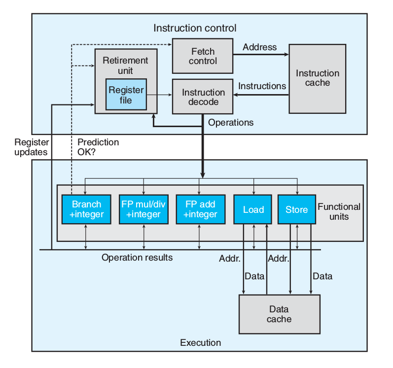
4.4.2.1 Branch Prediction & Speculative Execution
Misprediction incurs a significant cost in performance
4.4.2.2 Instruction Decoding
Instruction decoding logic takes the actual program instructions and converts them into a set of primitive operations
addq %rax, 8(%rdx)
yields multiple operations, separating the memory references from the arithmetic operations.
4.4.2.3 EU
The EU receives operations from the instruction fetch unit. Operations are dispatched to a set of functional units that perform the actual operations.
4.4.2.4 Retirement Unit
The retirement unit keeps track of the ongoing processing and makes sure that it obeys the sequential semantics of the machine-level program.
- once the operations for the instruction have completed and any branch points
leading to this instruction are confirmed as having been correctly predicted, the instruction can be retired
- If some branch point leading to this instruction was mispredicted, the instruction
will be flushed, discarding any results that may have been computed.
4.4.2.5 Operation Results
the execution units can send results directly to each other.
- The most common mechanism for controlling the communication of operands
among the execution units is called register renaming
4.4.2.6 Functional Unit Performance
- Latency: the total time required to perform the operation
- Issue time: the minimum number of clock cycles between two successive operations of the same type
| Operation | Latency | Issue |
| Add(Int) | 1 | 1 |
| Mul(Int) | 3 | 1 |
| Div(Int) | 3~30 | 3~30 |
| Add(Float) | 3 | 1 |
| Mul(Float) | 5 | 1 |
| Div(Float) | 3~15 | 3~15 |
- Functional units with issue times of 1 cycle are said to be fully pipelined
- Thoughput: \(\frac{number\ of\ function\ unit}{issue\ time}\) cycles per operation
4.4.3 Data Flow Analysis
Keypoint is finding critical path
4.4.4 Loop Unrolling
Loop unrolling is a program transformation that reduces the number of iterations for a loop by increasing the number of elements computed on each iteration.
for (i = 0; i < n; i++) { acc = acc * data[i]; } // --> 2 * 1 loop unrolling for (i = 0; i < n-1; i+=2) { // reassociation transformation: better than (acc * data[i]) * data[i+1] acc = acc * (data[i] * data[i+1]); } for (; i < n; i++) { // finish any remaining elements acc = acc * data[i]; }
- GCC -O3 will perform loop unrolling and reassociations of int operations.
4.4.5 Parallelism
for (i = 0; i < n-1; i+=2) { acc0 = acc0 * data[i]; acc1 = acc1 * data[i+1]; } for (; i < n ; ++) { acc0 = acc0 * data[i]; } result = acc0 * acc1
- parallelize
mapop inmapreducemechanism
4.4.6 Limiting Factors
4.4.6.1 Register Spilling
4.4.6.2 Branch Prediction and Misprediction Penalties
Branch prediction is only reliable for regular patterns.
Principles to avoid branch misprediction penalties
- Do not be overly concerned about predictable branches
Write code suitable for implementation with conditional moves (depends on compiler, write and check asm)
for (i = 0; i < N; ++i) { if (a < b) min = b; // not predictable, cost of misprediction penalties is high } for (i = 0; i < N; ++i) { min = a < b ? a : b; // CPE is steady }
4.4.7 CPU caches
Modern processors have dedicated functional units to perform load and store operations, and these units have internal buffers to hold sets of outstanding requests for memory operations.
4.4.7.1 Load Performance
Depends on the pipelining capability and the latency of the load unit.
4.4.7.2 Store Performance
The store operation can operate in a fully pipelined mode, beginning a new store on every cycle. Because the store operation does not affect any register values.
- interaction with load operation
The load operation will check the entries in the store buffer for matching addresses. If it finds a match, it retrieves the corresponding data entry as the result of the load operation.
When the load and store addresses match, these two operations can't be parallelized.
4.5 Basic strategies for Optimization in the Real World
4.5.1 High-level Design
Choose appropriate algorithms and data structures
4.5.2 Basic Coding Principles
Avoid optimization blockers so that a compiler can generate efficient code.
- Eliminate excessive function calls
- Eliminate unnecessary memory references
4.5.3 Low-level Optimizations
- Unroll loops
- Find ways to increase instruction-level parallelism by techniques such as
multiple accumulators and reassociation
- Rewrite conditional operations in a functional style to enable compilation
via conditional data transfers
4.6 Profiling
4.6.1 Limitation of GPROF
- For programs that run for less than around 1 second, the timing is not very precise
- Not work for inline function
- By default, the timings for library functions are not shown.
5 Storage
5.1 Storage Hierarchy
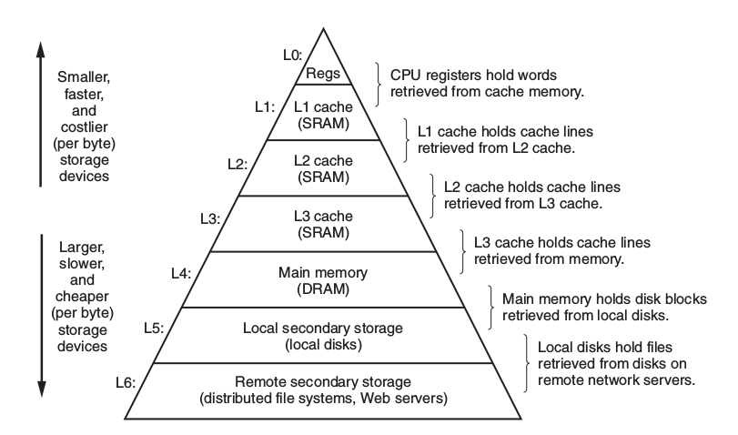
5.1.1 Static RAM
CPU cache
5.1.2 Dynamic RAM
Main memory
5.1.3 Conventional DRAMs
5.1.3.1 memory controller
5.1.3.2 memory modules
5.1.3.3 DRAM supercell
- d supercells
- w DRAM cells in each supercell
- A \(d\times w\) DRAM stores dw bits of information
5.1.3.4 DRAM cells
- RAS: Row Access Strobe
- CAS: Column Access Strobe
- Use internal row buffer to cache
5.1.3.5 Data Flow
To retrieve a 64-bit doubleword at memory address A, the memory controller converts A to a supercell address (i, j ) and sends it to the memory module, which then broadcasts i and j to each DRAM. In response, each DRAM outputs the 8- bit contents of its (i, j ) supercell. Circuitry in the module collects these outputs and forms them into a 64-bit doubleword, which it returns to the memory controller.
5.1.4 Enhanced DRAMs
5.1.4.1 FPM DRAM
Fast page mode DRAM, allowing consecutive accesses to the same row to be served directly from the row buffer
5.1.4.2 EDO DRAM
Extended data out DRAM, allows the individual CAS signals to be spaced closer together in time.
5.1.4.3 SDRAM
Synchronous DRAM, SDRAM can output the contents of its supercells at a faster rate than its asynchronous counterparts(FPM DRAM & EDO DRAM).
5.1.4.4 DDR SDRAM
An enhancement of SDRAM that doubles the speed of the DRAM by using both clock edges as control signals. Different types of DDR SDRAMs are characterized by the size of a small prefetch buffer that increases the effective bandwidth: DDR (2 bits), DDR2 (4 bits), and DDR3 (8 bits).
5.1.4.5 VRAM
Used in the frame buffers of graphics systems. VRAM is similar in spirit to FPM DRAM. Differences are: 1) VRAM output is produced by shifting the entire contents of the internal buffer in sequence 2) VRAM allows concurrent reads and writes to the memory.
5.1.5 Nonvolatile Memory
- programmable ROM (PROM)
- erasable programmable ROM (EPROM)
- Flash memory
- Programs stored in ROM devices are called firmware. e.g. BIOS
5.1.6 Disk
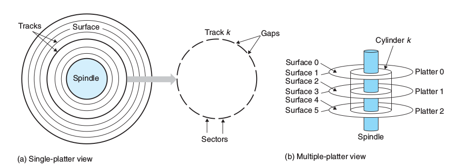
- terms: platter, surface, track, cylinder(vertical), sector(horizontal)
- reading information from disk is a 100,000 times longer than from DRAM and 1,000,000 times longer than from SRAM
5.1.6.1 Capacity
- recording density: bits/inch
- track density: tracks/inch
- areal density: \(recording\times track\)
\[Capacity=\frac{\#\ bytes}{sector}\times\frac{average\ \#\ sectors}{track}\times\frac{\#\ track}{surface}\times\frac{\#\ surfaces}{platter}\times\frac{\#\ platters}{disk}\]
5.1.6.2 Access time
The access time for a sector has three main components
- seek time avg 3~9ms (seek track)
- rotational latency (seek sector)
\[T_{max}=\frac{1}{RPM}\ minutes\] \[T_{avg}=\frac{T_{max}}{2}\ minutes\]
- transfer time
\[T{avg}=\frac{1}{RPM}\times\frac{1}{avg\ \#\ sectors/track}\ minutes\]
5.1.6.3 Logical Disk Blocks
- number of blocks is equal to number of sectors, numbered 0, 1, …, B-1
- A firmware device in the disk, called the disk controller,
maintains the mapping between logical block numbers and actual (physical) disk sectors.
5.1.6.4 Accessing Disks
Uses a technique called memory-mapped I/O. In a system with memory-mapped I/O, a block of addresses in the address space is reserved for communicating with I/O devices. Each of these addresses is known as an I/O port. Each device is mapped to one or more I/O ports when it is attached to the bus.
e.g. Reading from disk. Suppose that the disk controller is mapped to port 0xa0
- sends a command word that tells the disk to initiate a read
- indicates the logical block number that should be read
- indicates the main memory address where the contents of the disk sector should be stored.
Disk controller finishes the direct memory access(DMA) transfer, then notify CPU the I/O is done.
5.1.6.5 SSD
Based on flash memory
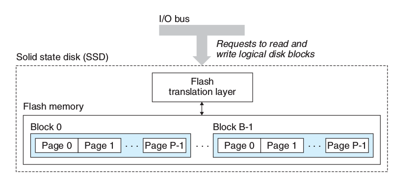
- flash translation layer: plays the same role as a disk controller (translating blocks)
- B blocks
- Each block consists of P pages
- Data is read and written in units of pages
5.2 BUS
- system bus
- memory bus
- I/O bus: independent of the CPU, PCIe(Peripheral Component Interconnect express)
- I/O bus connects USB devices, graphics adapter, host bus adapter(SATA, SCSI), network adapter, etc.
5.3 Locality
5.3.1 Principle of Locality
- Good temporal locality
A memory location that is referenced once is likely to be referenced again multiple times in the near future
- Good Spatial Locality
If a memory location is referenced once, then the program is likely to reference a nearby memory location in the near future.
5.3.2 Reference Patterns
- sequential(stride-1) reference pattern enjoys good spatial locality
// a[M][N] int sum = 0; for (i = 0; i < N; i++) for (j = 0; j < M; j++) sum += a[j][i] // bad, stride-N
5.3.3 Locality of Instruction Fetches
Loops have good temporal and spatial locality with respect to instruction fetches. The smaller the loop body and the greater the number of loop iterations, the better the locality.
5.3.4 Cache Hit
5.3.5 Cache Miss
5.3.5.1 Placement Policy
Randomly placed blocks are expensive to locate. Restricts a particular block at level k+1 to a small subset of the blocks at level k.
5.3.5.2 Replacement Policy
- random replacement policy
- least-recently used(LRU)
5.3.5.3 Kinds of Cache Misses
- cold miss(compulsory miss): miss on cold cache(empty cache)
- conflict miss: placement policy lead to conflict miss
- capacity miss: when the size of the working set exceeds the size of the cache
5.4 Cache Memories
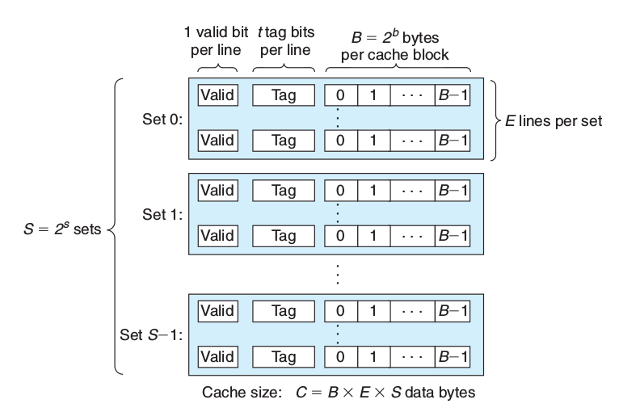
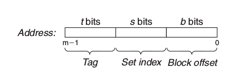
- i-cache: A cache that holds instructions, often read-only
- d-cache: A cache that holds program data
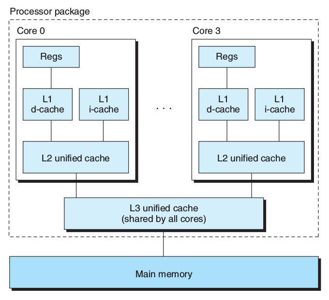
5.4.1 Terms
- block
a fixed-sized packet of information that moves back and forth between a cache and main memory
- line
a container in a cache that stores a block, as well as other information such as the valid bit and the tag bits
- set
a collection of one or more lines.
5.4.2 Parameters
| \(S=2^s\) | Number of sets |
| \(E\) | Number of lines per set |
| \(B=2^b\) | Block size(bytes) |
| \(m=\log_2(M)\) | Number of memory address bits |
| \(M=2^m\) | Maximum number of unique memory addresses |
| \(s=\log_2(S)\) | Number of set index bits |
| \(b=\log_2(B)\) | Number of block offset bits |
| \(t=m-(s-b)\) | Number of tag bits |
| \(C=B\times E \times S\) | Cache size exclude valid and tag bits |
- valid bit: indicates whether or not the line contains meaningful information
- tag bits: a subset of the bits from the current block’s memory address, uniquely
identify the block stored in the cache line.
- set is like hash table, set index bits as hash code, E indicates the number of buckets.
5.4.3 Direct-Mapped Caches(\(E=1\))
- Set Selection(set index bits)
- Line Matching: if the valid bit is set and the tag in the cache line matches the tag in the address.
- Cache Hit: Word Selection(block offset bits)
- Cache Miss: retrieve from memory
5.4.4 Set Associative Caches( \(1 < E < C/B\) )
- Line Matching Key: tag bits
- Cache Miss: use replacement policy, e.g. LFU(least-frequently-used), LRU(least-recently-used)
5.4.5 Fully Associative Caches(\(E=C/B, S=1\))
no set index bits
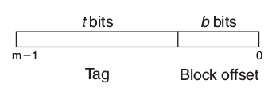
- Line Matching: same as Set Associative Caches
- only appropriate for small caches, e.g. translation lookaside buffers (TLB)s
5.4.6 Write Issues
5.4.6.1 Write Hit
- write-through: immediately write w’s cache block to the next lower level
- write-back: updated block to the low level when it is evicted from the cache
by the replacement algorithm. Maintains an additional dirty(modify) bit for each cache line.
5.4.6.2 Write Miss
- write-allocate: loads the corresponding block from the lower level into the cache
and then updates the cache block
- not-write-allocate
5.4.7 Performance Impact of Cache Parameters
5.4.7.1 Indicators
- Miss rate: \(\frac{\#\ misses}{\#\ references}\)
- Hit rate: \(1-Miss\ rate\)
- Hit time: the time to deliver a word in the cache to the CPU
- Miss penaly: any additional time required because of a miss
5.4.7.2 Impacts
- Cache size
- Block size: The larger blocks can help increase the hit rate by exploiting any spatial locality, but expensive
- Associativity(E): The larger E decreases the vulnerability of the cache to thrashing due to conflict misses
5.4.8 Writing Cache-friendly Code
- Make the common case go fast
- Minimize the number of cache misses in each inner loop(step=1 is the best)
6 Linking
- preprocesser(cpp for C -> xxx.i)
- compiler(cc1 -> xxx.s, generate symbol table)
- assembler(as -> xxx.o)
- linker(ld -> executable)
- loader(executable -> memory)
6.1 Object Files
6.1.1 Relocatable object file
Contains binary code and data in a form that can be combined with other relocatable object files at compile time to create an executable object file.
| ELF header(16bytes) |
| .text |
| .rodata |
| .data |
| .bss |
| .symtab |
| .rel.text |
| .rel.data |
| .debug |
| .line |
| .strtab |
| Section header table |
6.1.1.1 ELF header
Describes the word size and byte ordering of the system that generated the file
6.1.1.2 .text
The machine code of the compiled program.
6.1.1.3 .rodata
Read-only data such as the format strings in printf statements, and jump tables for switch statements
6.1.1.4 .data
Initialized global C variables.
6.1.1.5 .bss
Uninitialized global C variables.
6.1.1.6 .symtab
A symbol table with information about functions and global variables that are defined and referenced in the program.
6.1.1.7 .rel.text(.rela.text)
A list of locations in the .text section that will need to be modified when the linker combines this object file with others.
6.1.1.8 .rel.data(.rela.data)
Relocation information for any global variables that are referenced or defined by the module.
6.1.1.9 .debug
A debugging symbol table with entries for local variables and typedefs defined in the program.
6.1.1.10 .line
A mapping between line numbers in the original C source program
and machine code instructions in the .text section.(-g only)
6.1.1.11 .strtab
A string table for the symbol tables in the .symtab and .debug sections, and for the section names in the section headers.
6.1.2 Excutable object file
Contains binary code and data in a form that can be copied directly into memory and executed.
- readonly(code segment)
| ELF header |
| Segment header table |
| .init |
| .text |
| .rodata |
- read/write(data segment)
| .data |
| .bss |
- Symbol table and debug info are not loaded into memory
| .symtab |
| .debug |
| .line |
| .strtab |
| Section header table |
6.1.2.1 ELF header
The ELF header describes the overall format of the file. It also includes the program’s entry point
6.1.2.2 .init
.init section defines a small function, called _init,
that will be called by the program’s initialization code.
6.1.2.3 Segment header table
Map contiguous chunks of the executable file to contiguous memory segments. See Program Header displayed by objdump
- off: file offset
- vaddr\/paddr: vitual\/physical address
- align: segment alignment
- filesz: segment size in the object file
- memsz: segment size in memory
- flags: run-time permissions
6.1.3 Shared object file
A special type of relocatable object file that can be loaded into memory and linked dynamically, at either load time or run time.
6.2 Symbols
6.2.1 Symbol types
6.2.1.1 Global symbols that are defined by current module
6.2.1.2 Global symbols that are referenced by current module, aslo called externals
6.2.1.3 Local symbols that are defined and referenced exclusively by current module
Some local linker symbols correspond to C functions and global variables that are defined with the static attribute. These symbols are visible anywhere within module m, but cannot be referenced by other modules.
6.2.2 overloaded function in C++
The compiler encodes each unique method and parameter list combination into a unique name for the linker. This encoding process is called mangling, and the inverse process demangling.
6.2.3 strong/weak symbols
- Functions and initialized global variables get strong symbols.
- Uninitialized global variables get weak symbols.
- Rules:
- Multiple strong symbols are not allowed.
- Given a strong symbol and multiple weak symbols, choose the strong symbol.
- Given multiple weak symbols, choose any of the weak symbols.
-fno-common: triggers an error if it encounters multiply defined global symbols.-Werror: make all warnings into errors
6.3 Static Libraries
6.3.1 Symbol Resolution
The linker maintains a set E of relocatable object files that will be merged to form the executable, a set U of unresolved symbols (i.e., symbols referred to, but not yet defined), and a set D of symbols that have been defined in previous input files.
- place libraries at the end of the command line
6.4 Shared Libraries
- dynamic linker program: ld-linux.so
- dynamic linking: load shared libraries at an arbitrary memory address and linked with a program in memory at run-time.
A single copy of the .text section of a shared library in memory can be shared by different running processes.
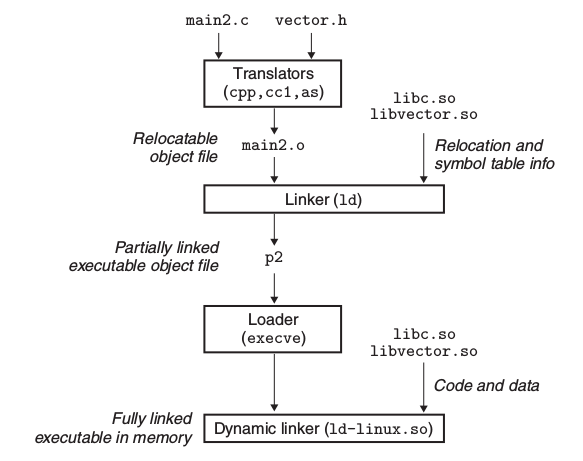
6.4.1 Compilation
gcc -shared -fpic -o libxxx.so xxx.c
6.4.2 Linking process
- Relocating the text and data of libc.so into some memory segment.
- Relocating the text and data of libxxx.so into another memory segment.
- Relocating any references in executable to symbols defined by libc.so and libxxx.so
- call main
6.4.3 Linking at run-time
#include <dlfcn.h> void *dlopen(const char *filename, int flag); //Returns: ptr to handle if OK void *dlsym(void *handle, char *symbol); //Returns: ptr to symbol if OK int dlclose (void *handle);//Returns: 0 if OK const char *dlerror(void);//Returns: error msg if previous call to dlopen, dlsym, or dlclose failed
gcc -rdynamic -o prog xxx.c -ldl
- compile with
-rdynamicoption to add all symbols to the dynamic symbol table
6.4.4 library interpositioning
wrap the function in shared library
6.4.4.1 compilation time
Compile with -I. to search current directory first
6.4.4.2 link time
gcc -W1,--wrap,func1 -o prog xxx.o xxx.o
-W1,--wrap,func1: gcc transform --wrap malloc to linker
6.4.4.3 run-time
Uses LD_PRELOAD environment variable
LD_PRELOAD="./wrapper.so" ./prog
6.5 Relocation
- Relocating sections and symbol definitions.
- Relocating symbol references within sections.
6.5.1 Relocation Entries
typedef struct { long offset; // Offset of the reference to relocate long type : 32, // Relocation type symbol : 32;// Symbol table index long addend; // Constant part of relocation expression } Elf64_Rela;
objdump -r xxx.o # to lookup the relocation entries readelf -r xxx.o
6.5.1.1 type
- R_X86_64_PC32: Relocate a reference that uses a 32-bit PC-relative address
- R_X86_64_32: Relocate a reference that uses a 32-bit absolute address
6.5.2 Relocation Algorithm(Linker)
foreach section s { foreach relocation entry r { refptr = s + r.offset; // ptr to reference to be relocated (need to fill in) // PC-relative relocation if (r.type == R_X86_64_PC32) { refaddr = ADDR(s) + r.offset; // ref's run-time address *refptr = (unsigned) (ADDR(r.symbol) - refaddr + r.addend); // runtime symbol addr - current PC->addr } // absolute addr relocation if (r.type == R_X86_64_32) { *refptr = (unsigned) (ADDR(r.symbol) + r.addend); } } }
- r.addend: constant number should be added to find the correct address
6.6 Loading Executable Object Files
- loader: copies the code and data in the executable object file from
disk into memory, and then runs the program by jumping to its first instruction, or entry point.
6.6.1 run-time memory structure
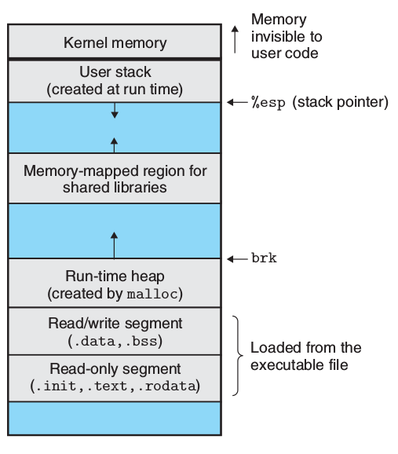
- not considering ASLR(address-space layout randomization)
6.6.2 loading process
- creates the memory image
- copies chunks of the executable into the code and data segments
- jumps to the program's entry point, which is always the address of the
_startsymbol(defined in crt1.o) - call
__libc_start_main(defined in libc.so) - call main
6.7 Position-Independent Code (PIC)
The code can be loaded and executed at any address without being modified by the linker.
- Shared libraries must be compiled with
-fpic
6.7.1 global offset table(GOT)
GOT is created by compiler at the beginning of the data segment(in .so file). At load time, the dynamic linker relocates each entry in the GOT so that it contains the appropriate absolute address.
6.7.2 PIC Data References
The data segment is always allocated immediately after the code segment. Thus, the distance between any instruction in the code segment and any variable in the data segment is a run-time constant.
6.7.3 PIC Function Calls
6.7.3.1 lazy binding
Defers the binding of procedure addresses until the first time the procedure is called.
6.7.3.2 procedure linkage table(PLT)
If an object module calls any functions that are defined in shared libraries, then it has its own GOT and PLT. The PLT is part of the .text section
6.8 Tools
- ar: Creates static libraries, and inserts, deletes, lists, and extracts members.
- strings: Lists all of the printable strings contained in an object file.
- strip: Deletes symbol table information from an object file.
- nm: Lists the symbols defined in the symbol table of an object file.
- size: Lists the names and sizes of the sections in an object file.
- readelf: Displays the complete structure of an object file, including all of the
information encoded in the ELF header; subsumes the functionality of size and nm.
- objdump: The mother of all binary tools. Can display all of the information in an
object file. Its most useful function is disassembling the binary instructions
in the .text section. objdump -dx
- ldd: Lists the shared libraries that an executable needs at run time.
7 ECF(Exceptional Control Flow)
7.1 Classes of Exceptions
| Class | Cause | Async/Sync | Return behavior |
|---|---|---|---|
| Interrupt | Signal from IO device | Async | Always returns to next instruction |
| Trap | Intentional exception | Sync | Always returns to next instruction |
| Fault | Potentially recoverable error | Sync | Might return to current instruction |
| Abort | Nonrecoverable error | Sync | Never returns |
7.2 Process
Provides:
- An independent logical control flow that provides the illusion that our
program has exclusive use of the processor.
- A private address space that provides the illusion that our program has
exclusive use of the memory system.
7.2.1 Terminology
- concurrent flow: A logical flow whose execution overlaps in time with another flow
- time slice: Each time period that a process executes a portion of its flow
- parallel flow: Two flows are running concurrently on different processor cores or computers
- scheduling: The kernel can decide to preempt the current process and restart a previously preempted process
- zombie process:A terminated process that has not yet been reaped, and it still consume system memory resources.
7.2.2 Process Control
#include <unistd.h> pid_t getpid(); // get current process id pid_t getppid(); // get parent process id pid_t fork(); // create subprocess unsigned int sleep(unsigned int secs); int pause(void); // puts the calling function to sleep until a signal is // received by the process. int execve(const char *filename, const char *argv[], const char *envp[]); #include <stdlib.h> void exit(int status); char *getenv(const char *name); int setenv(const char *name, const char *newvalue, int overwrite); void unsetenv(const char *name); #include <sys/wait.h> pid_t waitpid(pid_t pid, int *statusp, int options); // waits for its children to terminate pid_t wait(int *statusp); // same as waitpid(-1, &status, 0)
7.2.2.1 fork
- child gets an identical (but separate) copy of the parent’s user-level virtual
address space, including the text, data, and bss segments, heap, user stack, and identical copies of any of the parent’s open file descriptors.
- Call once, return twice. Return child pid in parent process, return 0 in child process.
7.2.2.2 waitpid
suspends execution of the calling process until a child process in its wait set terminates.(default)
Arguments:
- pid=-1: the wait set consists of all of the parent’s child processes.
- options
Combinations of the WNOHANG, WUNTRACED and WCONTINUED constants.
- WNOHANG: Return immediately if none of the child processes in the wait set has terminated yet
- WUNTRACED: Suspend execution of the calling process until a process in
the wait set becomes either terminated or stopped
- WCONTINUED
- statusp
If the status argument is non-NULL, then waitpid encodes status information about the child that caused the return in the status argument.
Status Macro: WIFEXITED, WEXITSTATUS, WIFSIGNALED, WTERMSIG, WIFSTOPPED, WSTOPSIG, WIFCONTINUED
- Return Value
- If the calling process has no children, then waitpid returns −1 and sets errno to ECHILD.
- If the waitpid function was interrupted by a signal, then it returns −1 and sets errno to EINTR.
7.2.2.3 execve
The execve function loads and runs a new program in the context of the current process. It overwrites the address space of the current process, it does not create a new process. The new program still has the same PID, and it inherits all of the file descriptors that were open at the time of the call to the execve function.
7.3 Signals
man 7 signal
#include <unistd.h> pid_t getpgrp(void); // returns the process group ID of the current process. int setpgid(pid_t pid, pid_t pgid); // changes the process group of process pid to pgid. #include <signal.h> int kill(pid_t pid, int sig); // sends signal to process pid unsigned int alarm(unsigned int secs); // arranges for the kernel to send a // SIGALRM signal to the calling process // in secs seconds
7.3.1 Receiving Signals
#include <signal.h> typedef void (*sighandler_t)(int); sighandler_t signal(int signum, sighandler_t handler);
7.3.2 Blocking Signals
#include <signal.h> int sigprocmask(int how, const sigset_t *set, sigset_t *oldset); int sigemptyset(sigset_t *set); int sigfillset(sigset_t *set); int sigaddset(sigset_t *set, int signum); int sigdelset(sigset_t *set, int signum); int sigismember(const sigset_t *set, int signum);
7.3.2.1 sigsuspend
#include <signal.h> int sigsuspend(const sigset_t *mask); // is equivalent to(atomic) sigprocmask(SIG_SETMASK, &mask, &prev); pause(); sigprocmask(SIG_SETMASK, &prev, NULL);
7.3.3 Nonlocal Jumps
#include <setjmp.h> int setjmp(jmp_buf env); int sigsetjmp(sigjmp_buf env, int savesigs); void longjmp(jmp_buf env, int retval); void longjmp(sigjmp_buf env, int retval);
7.3.3.1 setjmp
The setjmp function saves the current calling environment in the env buffer,
for later use by longjmp, and returns a 0.
7.3.3.2 longjmp
The longjmp function restores the calling environment from the env buffer
and then triggers a return from the most recent setjmp call that initialized env.
The setjmp then returns with the nonzero return value retval.
7.3.3.3 extension: try-catch
7.4 Tools
- strace: Prints a trace of each system call invoked by a running program and its children.
Compile your program with -static to get a cleaner trace.
- ps
- top
- pmap: Displays the memory map of a process.
- /proc: A virtual filesystem that exports the contents of numerous kernel data structures.
8 Unix I/O
8.1 File operations
8.1.1 Basic
#include <sys/types.h> #include <sys/stat.h> #include <fcntl.h> int open(char *filename, int flags, mode_t mode); // returns file descriptor or -1 int close(int fd); // 0 if OK, -1 on error #include <unistd.h> ssize_t read(int fd, void *buf, size_t n); // returns number of bytes read if OK, 0 on EOF, −1 on error ssize_t write(int fd, const void *buf, size_t n); // returns number of bytes written if OK, −1 on error off_t lseek(int fd, off_t offset, int whence);
8.1.2 Application-level Buffering
Efficiently read text lines and binary data from a file whose contents are cached in a slightly larger application-level buffer.
8.1.3 Metadata
#include <unistd.h> #include <sys/stat.h> int stat(const char *filename, struct stat *buf); int fstat(int fd, struct stat *buf);
8.1.4 File Status
Data structures to describe file status
- Descriptor table: Each process has its own separate descriptor table.
- File table: The set of open files is represented by a file table that is shared by all processes.
Each file table entry consists of (for our purposes) the current file position, a reference count of the number of descriptor entries that currently point to it, and a pointer to an entry in the v-node table.
- v-node table: The v-node table is shared by all processes.
Each entry contains most of the information in the stat structure.
8.2 Directory
#include <sys/types.h> #include <dirent.h> DIR *opendir(const char *name); struct dirent *readdir(DIR *dirp); int closedir(DIR *dirp);
8.3 I/O Redirection
#include <unistd.h> int dup2(int oldfd, int newfd);
The dup2 function copies descriptor table entry oldfd to descriptor table entry
newfd, overwriting the previous contents of descriptor table entry newfd.
9 Socket
9.1 Network Byte Order
#include <arpa/inet.h> // host -> network uint32_t htonl(uint32_t hostlong); uint16_t htons(uint32_t hostshort); // network -> host uint32_t ntohl(uint32_t netlong); uint32_t htonl(uint32_t netshort);
9.2 IP Address
#include <arpa/inet.h> struct in_addr { uint32_t s_addr; // network byte order }; int inet_pton(AF_INET, const char *src, void *dst); //"x.x.x.x" -> &in_addr const char *inet_ntop(AF_INET, const void *src, char *dst, socklen_t size); //&in_addr -> "x.x.x.x"
9.3 Connection
uniquely identified by (cliaddr:cliport, servaddr:servport)
9.4 Socket Address
// IP socket address struct sockaddr_in { uint16_t sin_family; // protocol famliy (AF_INET) uint16_t sin_port; // port number in network byte order struct in_addr sin_addr; unsigned char sin_zero[8]; // pad to sizeof(struct sockaddr) } // Generic socket address struct sockaddr { uint16_t sa_family; char sa_data[14]; }
9.5 Interface
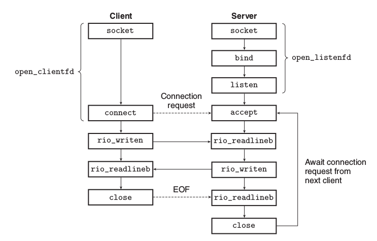
#include <sys/types.h> #include <sys/socket.h> int socket(int domain, int type, int protocol); // client-side int connect(int clientifd, const struct sockaddr *addr, socklen_t addrlen); // server-side int bind(int sockfd, const struct sockaddr *addr, socklen_t addrlen); int listen(int sockfd, int backlog); int accept(int listenfd, struct sockaddr *addr, int *addrlen);
- listen: The
listenfunction converts sockfd from an active socket to a listening socket
that can accept connection requests from clients.
- accept: The
acceptfunction waits for a connection request from a client to arrive on
the listening descriptor listenfd, then fills in the client’s socket address in addr,
and returns a connected descriptor.
9.5.1 getaddrinfo
#include <netdb.h> #include <sys/socket.h> #include <sys/types.h> int getaddrinfo(const char *host, const char *service, const struct addrinfo *hints, struct addrinfo **result); void freeaddrinfo(struct addrinfo *result); int getnameinfo(const struct sockaddr *sa, socklen_t salen, char *host, size_t hostlen, char *service, size_t servlen, int flags); // reverse fn of getaddrinfo const char *gai_strerror(int errcode);
- service: service name(http, …) or port no(decimal)
- hints: see
man getaddrinfo, usememsetto initialize hints
10 Concurrency
10.1 Process
- Scheduled and maintained by the kernel.
- Have separate virtual address spaces.
10.2 I/O Multiplexing
- Scheduled by application itself.
- Single process
- All flows share the same address space.
10.2.1 select
#include <sys/select.h> int select(int n, fd_set *fdset, NULL, NULL, NULL); // macros for manipulating descriptor sets FD_ZERO(fd_set *fdset); // clear all fds in fdset FD_CLR(int fd, fd_set *fdset); // remove fd from fdset FD_SET(int fd, fd_set *fdset); // add fd to fdset FD_ISSET(int fd, fd_set *fdset); // is fd in fdset
Example:
#include <sys/select.h> int main(int argc, char **argv) { fd_set read_set, ready_set; FD_ZERO(&read_set); FD_SET(fd1, &read_set); FD_SET(fd2, &read_set); while (True) { ready_set = read_set; select(fd2 + 1, &ready_set, NULL, NULL, NULL); if (FD_ISSET(fd1, &ready_set)) { // ... } if (FD_ISSET(fd2, &ready_set)) { //... } } }
10.3 Thread
- Scheduled and maintained by the kernel.
- All flows share the same address space.
10.3.1 Thread Context
Includes a unique integer thread ID (TID), stack, stack pointer, program counter, general-purpose registers, and condition codes.
- much smaller than a process context
10.3.2 Posix Interface(pthread)
#include <pthread.h> typedef void *(func)(void *); int pthread_create(pthread_t *tid, pthread_attr_t *attr, func *f, void *arg); pthread_t pthread_self(void);// returns the ID of the calling thread pthread_once_t once_control = PTHREAD_ONCE_INIT; int pthread_once(pthread_once_t *once_control, void (*init_routine)(void)); void pthread_exit(void *thread_return); int pthread_cancel(pthread_t tid); int pthread_join(pthread_t tid, void **thread_return); int pthread_detach(pthread_t tid);
10.3.2.1 Initializing
The pthread_once function is useful whenever you need to dynamically
initialize global variables that are shared by multiple threads.
- Only the first call to
pthread_onceinvokesinit_routine
10.3.2.2 Terminating
- implicitly terminates when its top-level thread routine returns
- call
pthread_exitfunction - calls the Unix
exitfunction, which terminates the process
and all threads associated with the process.
- another thread calls
pthread_cancelto terminate current thread
10.3.2.3 Joining
Threads wait for other threads to terminate by calling the pthread_join function.
The once_control variable is a global or static variable that is always
initialized to PTHREAD_ONCE_INIT.
10.3.2.4 Detaching
At any point in time, a thread is joinable or detached.
A detached thread cannot be reaped or killed by other threads.
A joinable thread's memory resources are not freed until it is reaped by another thread
or detached by a call to the pthread_detach function
10.4 Synchronization
count++ for asm code
movq count(%rip), %rdx addq %eax movq %eax, cnt(%rip)
10.4.1 Semaphore
A semaphore s is a global variable with nonnegative integer value that can only
be manipulated by two special operations, called P and V
10.4.1.1 P(s)
If s is nonzero, then P decrements s and returns immediately(atomic). If s is zero,
then suspend the thread until s becomes nonzero and the process is restarted
by a V operation. After restarting, the P operation decrements s and returns
control to the caller.
10.4.1.2 V(s)
The V operation increments s by 1(atomic). If there are any threads blocked
at a P operation waiting for s to become nonzero, then the V operation
restarts exactly one of these threads, which then completes its P operation
by decrementing s.
10.4.1.3 API
#include <semaphore.h> int sem_init(sem_t *sem, int pshared, unsigned int value); int sem_wait(sem_t *s); /* P(s) */ int sem_post(sem_t *s); /* V(s) */
- pshared: be shared between the threads, or between processes
10.4.2 mutex
binary semaphore, value is 1 or 0
- P(s): lock the mutex
- V(s): unlock the mutex
#include <semaphore.h> sem_t mutex; sem_init(&mutex, 0, 1); // initialized by 1 sem_wait(&mutex); // lock cnt++; sem_post(&mutex); // unlock
10.4.3 Producer-Consumer Problem
#include <atomic> #include <deque> #include <iostream> #include <semaphore.h> #include <thread> #include <vector> sem_t mutex, items, slots; constexpr int MAX_SLOTS = 10; constexpr int THREAD_COUNT = 4; constexpr int PRODUCER_LOOPS = 10000; constexpr int EXPECTED_SUM = THREAD_COUNT * 49995000; std::deque<int> buf(0, MAX_SLOTS); void produce() { for (auto i = 0; i < PRODUCER_LOOPS; ++i) { sem_wait(&slots); sem_wait(&mutex); buf.emplace_back(i); sem_post(&mutex); sem_post(&items); } } void consume() { static std::atomic<int> sum{0}; while (true) { sem_wait(&items); sem_wait(&mutex); for (auto i = 0; i < buf.size(); ++i) { sum += buf.front(); buf.pop_front(); sem_post(&slots); } sem_post(&mutex); if (sum == EXPECTED_SUM) { std::cout << sum << "\n"; exit(EXIT_SUCCESS); } } } int main(int, char *[]) { sem_init(&mutex, 0, 1); sem_init(&items, 0, 0); sem_init(&slots, 0, MAX_SLOTS); std::vector<std::thread> producers; std::vector<std::thread> consumers; for (auto i = 0; i < THREAD_COUNT; ++i) { producers.emplace_back(produce); consumers.emplace_back(consume); } for (auto &th : producers) th.join(); for (auto &th : consumers) th.join(); return 0; }
10.4.4 Readers-Writers Problem
10.4.4.1 Reader favored
#include <atomic> #include <chrono> #include <iostream> #include <semaphore.h> #include <thread> #include <vector> using namespace std::chrono_literals; sem_t mutex, readcnt_mu; int readcnt = 0; int resource = 0; constexpr int THREAD_COUNT = 4; constexpr int WRITE_COUNT = 1000; void read() { int out = 0; while (true) { sem_wait(&readcnt_mu); readcnt++; if (readcnt == 1) { // first reader in sem_wait(&mutex); } sem_post(&readcnt_mu); out = resource; // read operation sem_wait(&readcnt_mu); readcnt--; if (readcnt == 0) { sem_post(&mutex); } sem_post(&readcnt_mu); std::this_thread::sleep_for(500ms); } } void write() { for (auto i = 0; i < WRITE_COUNT; ++i) { sem_wait(&mutex); resource = i; // write operation sem_post(&mutex); std::this_thread::sleep_for(1s); } } int main(int, char *[]) { sem_init(&mutex, 0, 1); sem_init(&readcnt_mu, 0, 1); std::vector<std::thread> readers; std::vector<std::thread> writers; for (auto i = 0; i < THREAD_COUNT; ++i) { readers.emplace_back(read); writers.emplace_back(write); } for (auto &th : readers) th.join(); for (auto &th : writers) th.join(); return 0; }